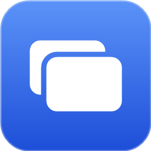
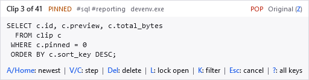
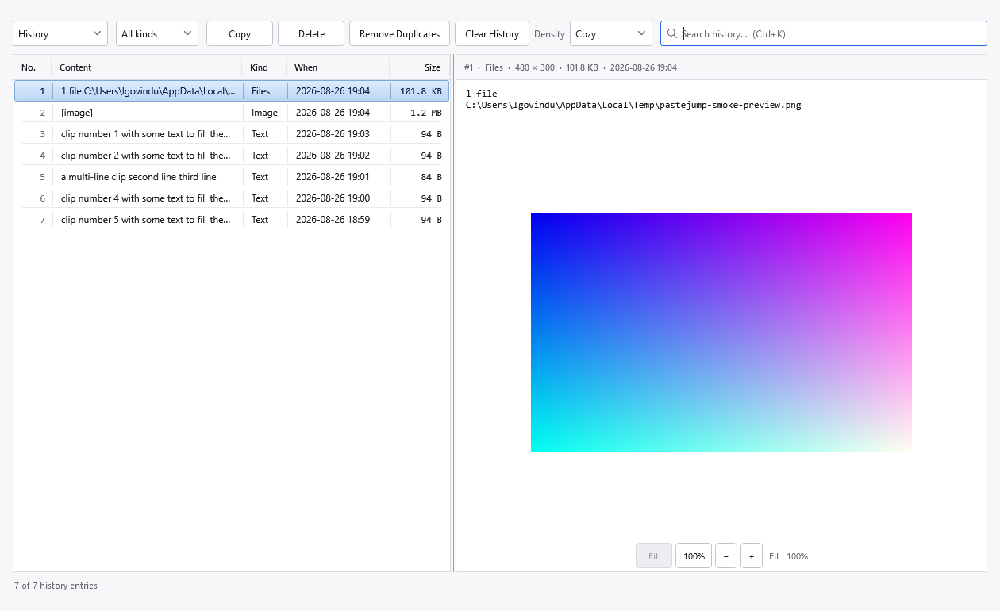
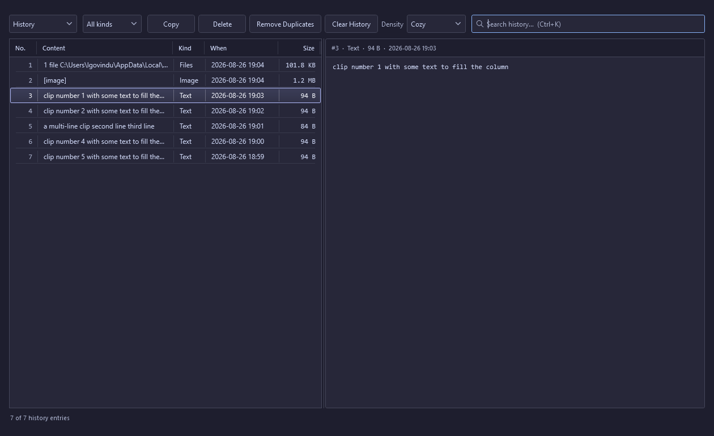
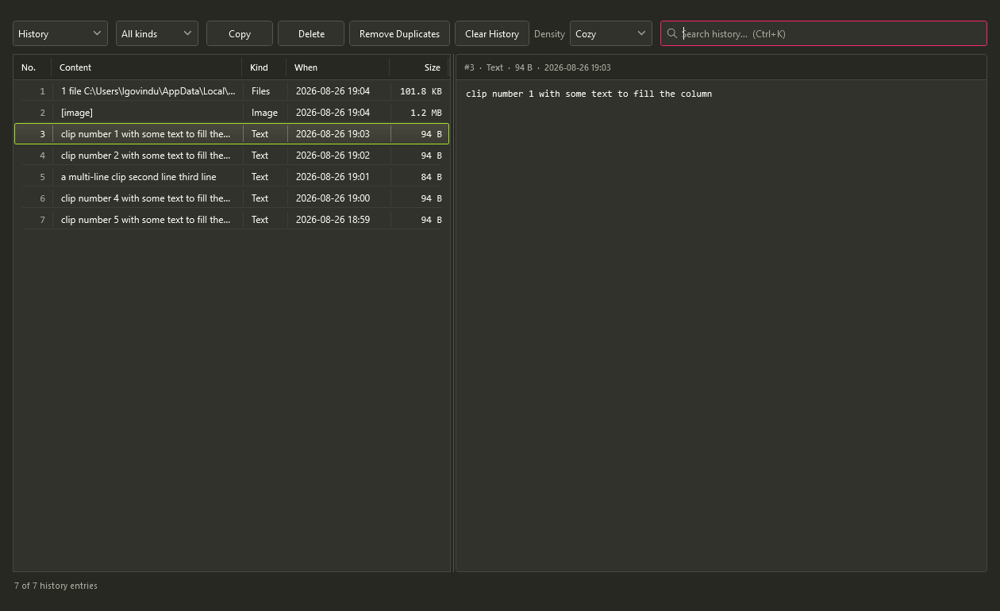
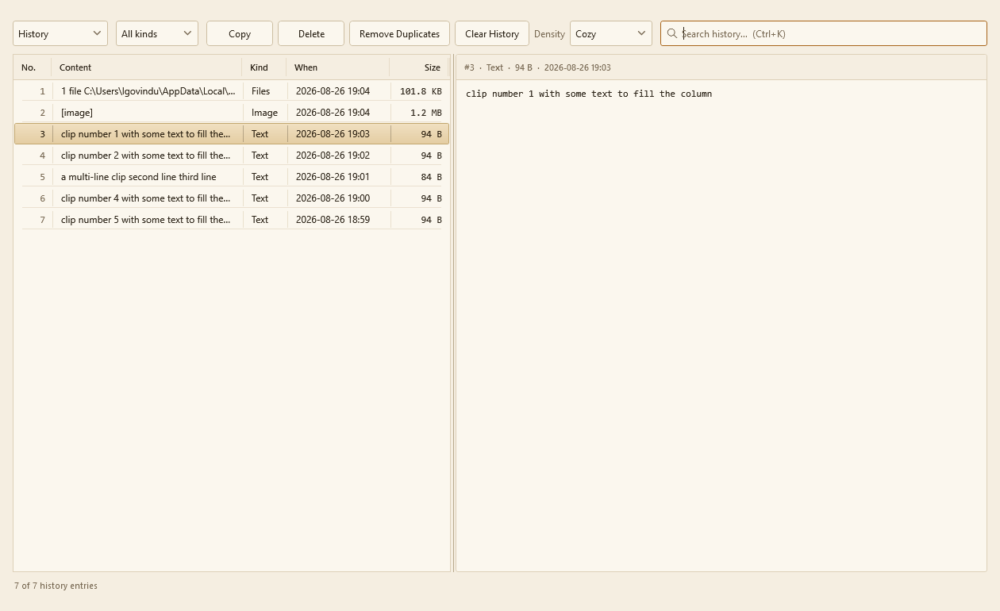
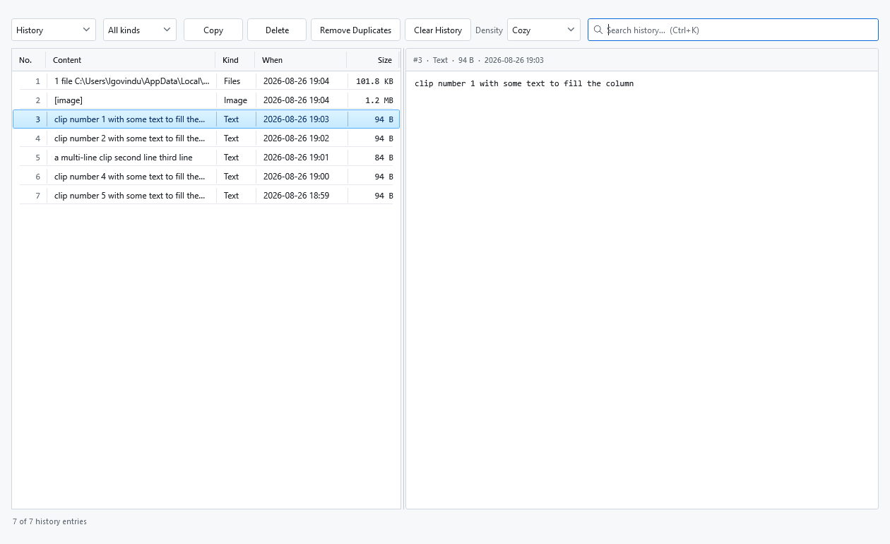

A jog wheel for your clipboard.
Ctrl held → tap V to walk back → release to paste
Windows 10 / 11, 64-bit · free, no registration · portable, nothing to install
Every clipboard manager can show you a list. The point of this one is that you never have to look at it: hold Ctrl, tap V until the clip you want appears beside the caret, and let go. Your hand never leaves the keyboard and nothing steals focus.
The overlay is there so you can look, not because you must. Once the gesture is in your fingers you will stop reading it — and then you can turn most of it off.

A reimplementation of Clipjump's gesture in .NET 10 and WPF, with the parts that were missing.
It appears beside the text caret, where you are already looking, instead of in a corner you have to glance away to. Where an application exposes no caret to Windows — every browser, Electron, Visual Studio — it centres on the window you are pasting into, so it is never on another monitor; and it steps aside from anything Windows draws above it, such as the Start menu.
A stack of clips the gesture pastes from, holding every clipboard format, and a searchable history archive that keeps a flattened record. Cleared separately, bounded separately.
Select rows in the history window and Copy becomes Copy Joined: they arrive as a single paste, separator of your choosing. The same during the gesture, for anyone who wants it — it ships with no key, so it stays out of the way until you give it a letter.
Z cycles Original, Plain text, Collapse whitespace, Sentence case and Unindent, so the thing you paste is the thing you wanted rather than what the web page was wearing.
F opens an incremental search over content and tags, full-text over the archive. You can release Ctrl and simply type.
Pinned clips sort first and survive Delete All. K narrows the stack to text, images or files only when you know what you are hunting for.
Every letter can be moved or switched off. The arrows, Home, End, Delete, Esc and F1 never move, so no set of bindings can leave you stuck.

Full-text search across everything you have copied, with a preview pane that renders images and reads the first lines of a copied text file. Select several rows and Copy joins them into one clip.
Reachable from the tray, from H during the gesture, or from a global hotkey if you set one.
Light, Dark, Same as Windows, and eighteen more — applied as you step through the list, so you can see one rather than imagine it. A theme is a small JSON file of named colours that inherits everything it does not set, so a three-line file is a valid theme.




Also shipped: Solarized Dark and Light, Tokyo Night, One Dark, Nord, Dracula, Rose Pine, Everforest Dark, Kanagawa, Gruvbox Dark, Zenburn, Midnight and Catppuccin Latte. How to write one.
Three shapes of the same build. Take the first one unless you have a reason not to.
| File | What is in it | Size | Needs |
|---|---|---|---|
| …-win-x64.zip | One PasteJump.exe. Portable — put it on a USB stick and its data goes with it. |
60 MB | Nothing |
| …-win-x64-unpacked.zip | The same build with the runtime already unpacked, 257 files. Starts about four times faster. | 59 MB | Nothing |
| …-win-x64-net10.zip | PasteJump's own files only, 15 of them. | 2.6 MB | .NET 10 Desktop Runtime |
Windows will warn you on first run. The download is not signed with a paid certificate, so SmartScreen reports an unknown publisher — choose More info and Run anyway. Every release carries a SHA256 so you can check you got what was published, and the whole source is here to read.
One ZIP holding a single self-contained PasteJump.exe, the manual as a
.chm, the licence and the third-party notices. No .NET runtime is needed, nothing is
installed, and nothing is written outside the folder you unpack it into and your own profile.
Every archive is published with a SHA256 beside it, so what you download can be checked against what was released.
The manual covers the data locations, the paste modes and how to coexist with another clipboard manager.
It is a clipboard manager, so it sees what you copy. Everything stays in a SQLite database on your own machine. There is no telemetry, no account, and no network call except an optional check for a new release — one request for a small file listing the published versions, made only when you ask for it.
Password managers are excluded by default, and you can add any program to that list — while it is in the foreground, nothing is recorded at all.